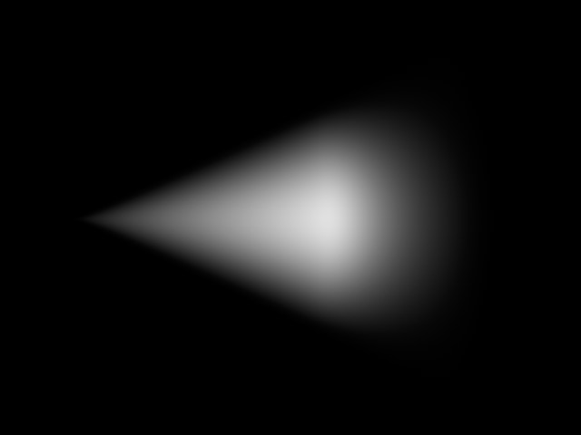
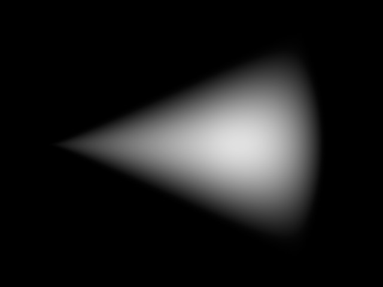
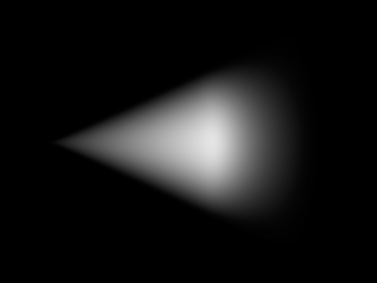
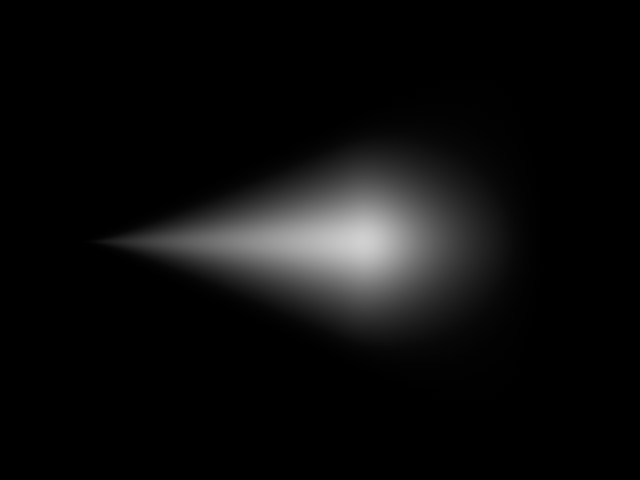
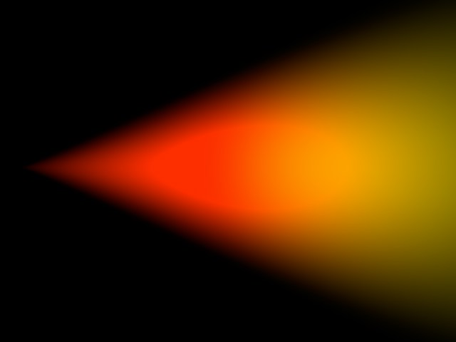
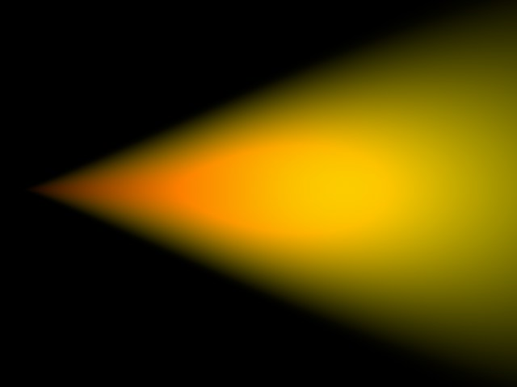
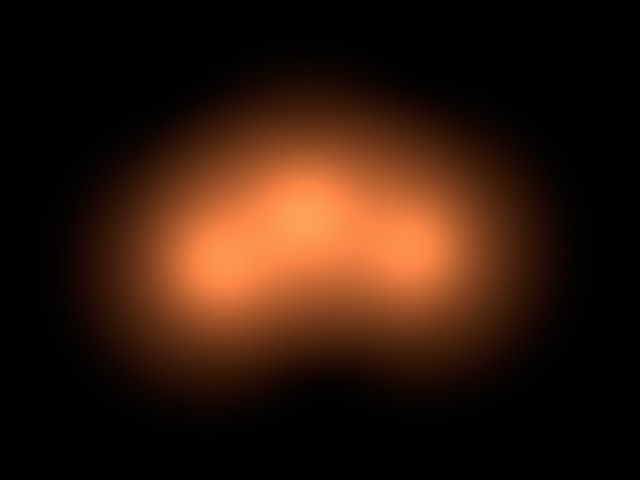
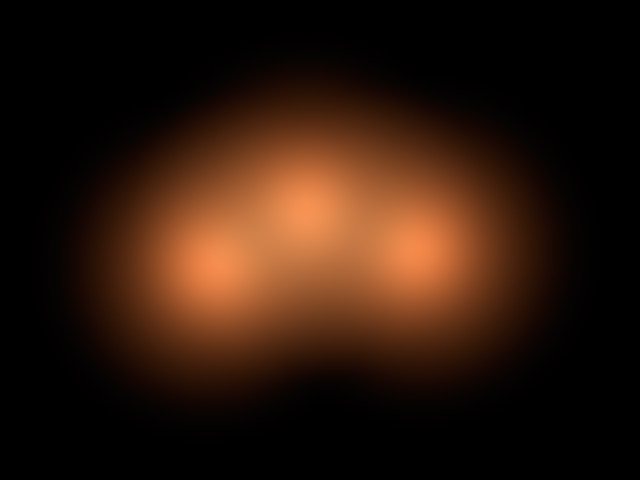
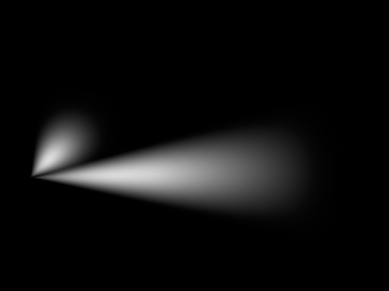
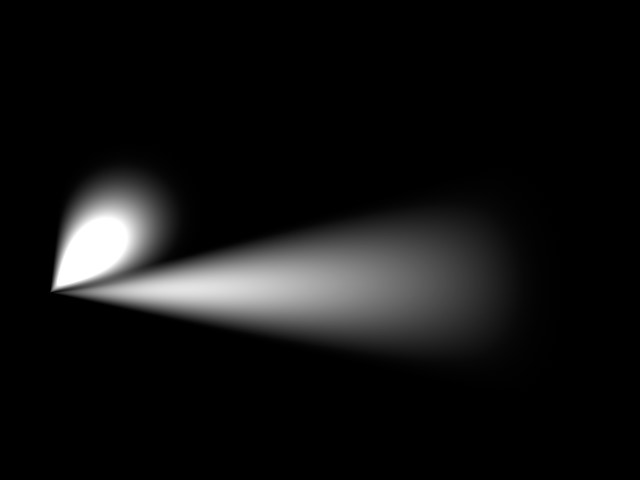

Visibility

Falloff is the percentage reduction in the light’s density. The axial falloff of the visible light is set to a standard 100%. This means that from the origin of the light to its outer distance, the density of the visible light falls from 100% to 0%. So, if a value of 10% is entered into the Falloff box, the outside edge will be at 90% visibility. Enable or disable Use Falloff to switch falloff on or off.
100% Falloff. |
0% Falloff. |
Use Edge Falloff
Edge Falloff [0..100%]
Edge Falloff is relevant only with Spotlight sources. The Edge Falloff determines how quickly the light’s density decreases towards the edge of the light cone. If you enter a value of 0% (or disable Use Edge Falloff), you will produce a very hard visible light. A value of 100% gives a more gradual falloff from the inside of the light cone to its outer edge, until it reaches 0%.
0 % Edge Falloff. |
100 % Edge Falloff. |
This option is only available with Spotlight sources, and in addition, Use Edge Falloff must be enabled. Normally, the Inner Color behaves in such a way that it travels along the Z axis of the Spotlight source linearly to the Outer Color. However, enabling Colored Edge Falloff will cause the Inner Color to also spread outwards radially from the Inner Angle to meet the Outer Color.
Colored Edge Falloff disabled. |
Colored Edge Falloff enabled. |
Beneath this value the density of the visible light is always a constant 100%. The falloff begins only outside this distance.
Between the Inner Distance and the Outer Distance the density of the visible light changes from 100% to 0%.
When using omni lights, modify the scale of the Outer Distance value along each axis using the three Relative Scale text boxes.
The Sample Distance is relevant for visible volumetric lights.
Adjusting this value defines how finely the visible light’s volumetric shadow will be computed. Larger values lead to a somewhat rough (but swift) calculation, while smaller values lead to a much finer, but more time-consuming, result.
The value of this Sample Distance is measured in world units. This value thus determines how finely the shadows within a visible light will be sampled. Values will usually be from 1/10th to 1/1000th of the light source radius. By increasing the value your scene will render noticeably faster but certain parts of your scene will be sampled very roughly, resulting in sampling artifacts.
To reduce these sampling artifacts requires a reduction in your sampling value too. The smaller the value, however, the higher the cost in rendering time.
Sample Distance tips
To produce fine shafts of light, such as those produced when light beams radiate through cracks or from behind stone columns, set the Sample Distance to a relatively low value. On the other hand, a light that is completely covered and allows no beams of light to break through may be sampled at a much higher value.
To clarify this, here’s a small example; the pumpkin in the pictures below has a radius of 150 units, the visible volumetric light a radius (Outer Distance) of 700 units.
So why is volumetric lighting so time-consuming for the renderer?
When a beam hits a light cone, it is not only the intensity of the light that needs to be computed. Additionally, for each part of the beam, Cinema 4D needs to look for other objects within the light cone that might be casting shadows. So for every part of the beam of light, an extra raytracer ray needs to be initiated and emitted.
Because it is not possible to shrink segments in the fog below a certain length, an approximation must be used; the length of the light cone is subdivided into equal parts.
Suppose the raytracer ray hits the light cone and the distance between the entry and the exit points of the light cone is 1,000 units. A sample distance of 50 units will mean that an intensity value and a shadow beam will have to be calculated 20 times (1,000/50). The shorter the sample distance, the longer the calculation will take.
Even with just five subdivisions (so a sample distance of 200 in the above example), this will require a five-fold increase per raytracer ray and per contact with the light cone than without volumetric lighting. Using progressively finer subdivisions, the processing time involved very quickly becomes astronomical.
This is an inherent problem with computer graphics that cannot be resolved or accelerated other than by throwing processor power at it.
So why can’t you input a fixed value for the number of samples?
Well, if the raytracer beam hits the light cone at its beginning, the distance between the entry and exit points might be, for example, 100 units. But if the beam hits the cone further from the light source, this distance might grow to 5,000 units or more.
So if you used a fixed number of samples, at the narrow end of the cone a lot of unnecessary calculations would be made and later too few (which would result in artifacts).
This value is the brightness of the visible light source.
Determines the darkness of the light cone. With a Dust value of more than 0%, Brightness is subtracted instead of added.
To ensure you see the full effect of this, lower the light’s brightness accordingly.
The difference between a normal bright light and a dust-assigned light can be seen clearly in the following illustration. To the left is a bright, visible light. To the right a dark, dusty, somewhat sooty light.
In principle, you can use dust in conjunction with particles to create realistic fire and smoke.
This produces irregularities in the visible light, which can help to prevent unwanted banding or contouring in the visible light source.
Use Gradient allows for much more flexible creation of color- and brightness gradients.
Use Falloff, also in the Visibility tab, must be activated.
Intensity (General tab) will now also affect the brightness of the visible light!
If Use Gradient is not active, the gradient defined in the Details tab may not be applied.
Enable this option if you want to mix the light beam additively with other light sources.
Additive enabled. |
Additive disabled. |
This option prevents a light beam from being over-exposed. The brightness is reduced until the over-exposed effect disappears.
Adapt Brightness enabled. |
Adapt Brightness disabled. |